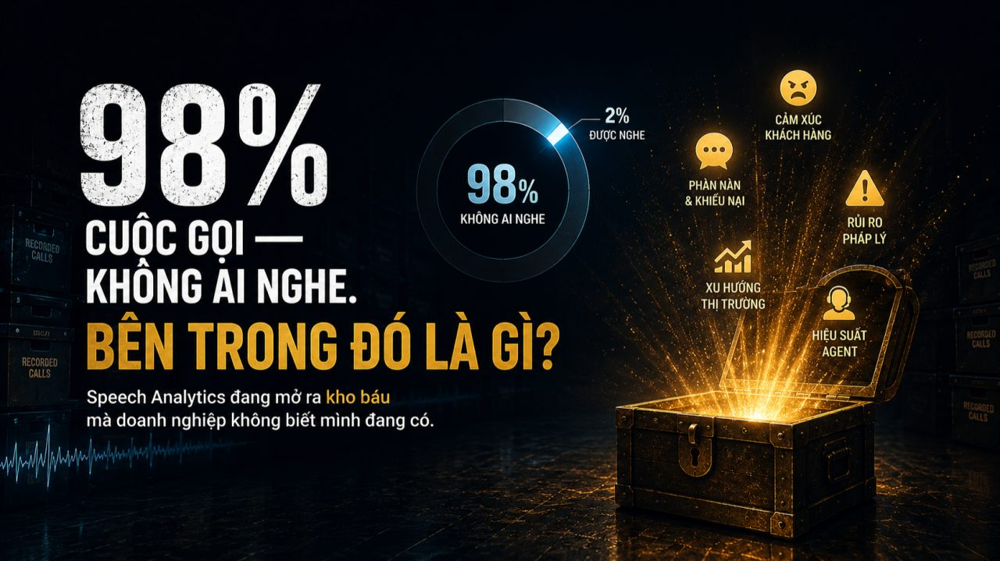
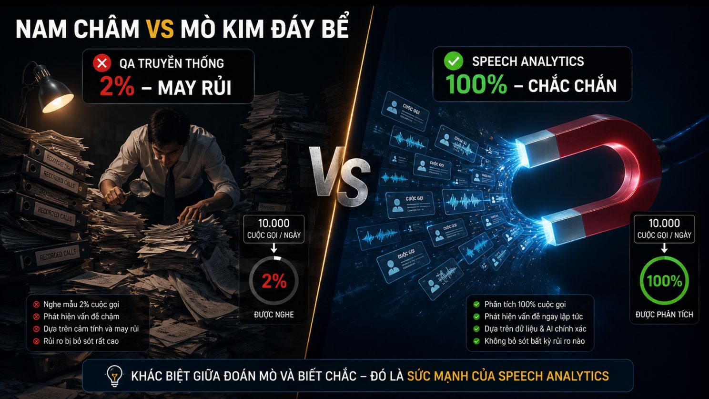

Trang chủ › Blog › Contact Center Insights · Mùa 1
Dữ liệu, AI và tương lai
Speech Analytics đang thay đổi Contact Center

Hãy thử một phép tính đơn giản:
Một Contact Center có 300 agent. Mỗi ngày xử lý 10.000 cuộc gọi.
Đội QA có 10 người. Mỗi người nghe tối đa 20 cuộc gọi mỗi ngày.
Tổng cộng: 200 cuộc gọi được đánh giá. Tỷ lệ: 2%.
98% còn lại không ai nghe. Không ai biết agent nói gì. Không ai biết khách hàng đang thực sự nghĩ gì.
Và từ 2% đó, toàn bộ quyết định về chất lượng dịch vụ, đào tạo nhân sự, cải tiến quy trình được đưa ra.
Đây không phải đánh giá chất lượng. Đây là đánh giá may rủi.
Trong ngành BFSI, dữ liệu là tài sản quý giá nhất.
Nhưng có một thực tế phũ phàng: hàng nghìn giờ ghi âm cuộc gọi mỗi ngày tại các Contact Center đang là "dữ liệu chết" nằm im trong ổ cứng lưu trữ, không được khai thác, không tạo ra giá trị gì.
Bên trong đó chứa đựng vô vàn điều mà doanh nghiệp đang khao khát biết:
Khách hàng đang phàn nàn về điều gì? Sản phẩm nào đang có vấn đề? Agent nào đang nói sai thông tin? Cuộc gọi nào đang tiềm ẩn rủi ro pháp lý?
Tất cả đang nằm trong những file ghi âm không ai mở.
Cho đến khi Speech Analytics xuất hiện và biến kho dữ liệu im lìm đó thành mỏ vàng thực sự.
Speech Analytics không phải chỉ là "chuyển giọng nói thành văn bản."
Nếu cách làm truyền thống giống như "mò kim đáy bể" thì Speech Analytics là chiếc nam châm khổng lồ, tự động hút ra mọi thứ quan trọng từ 100% cuộc gọi.

Đây là 3 tầng giá trị mà công nghệ này tạo ra:
🔍 Tầng 1 Phân tích nội dung: Nghe từng từ trong 100% cuộc gọi
Phát hiện ngay khi agent nói sai thông tin sản phẩm.
Nhận diện cuộc gọi có từ khóa nhạy cảm khiếu nại, tranh chấp, đe dọa pháp lý.
Đảm bảo agent tuân thủ đúng script và quy trình nghiệp vụ.
Trong ngành BFSI nơi mỗi câu nói của agent đều có thể trở thành bằng chứng pháp lý đây là lớp bảo vệ không thể thiếu.
Trước đây: QA phát hiện lỗi sau vài ngày hoặc vài tuần khi thiệt hại đã xảy ra.
Với Speech Analytics: Phát hiện ngay trong ngày thậm chí realtime.
💬 Tầng 2 Phân tích cảm xúc: Nghe cả những gì không được nói thẳng
Đây là tầng giá trị mà nhiều người chưa hình dung được.
Speech Analytics không chỉ nghe nội dung nó phân tích giọng điệu, tốc độ nói, âm lượng, sự ngập ngừng để đánh giá trạng thái cảm xúc của cả khách hàng lẫn agent.
Khách hàng đang bực bội dù chưa phàn nàn thẳng?
Agent đang căng thẳng và mất kiểm soát giọng điệu?
Cuộc gọi đang leo thang cảm xúc và có nguy cơ kết thúc tệ?
Hệ thống nhận ra tất cả và cảnh báo Supervisor trước khi tình huống vượt tầm kiểm soát.
Đây là sự khác biệt giữa phản ứng sau sự cố và ngăn chặn trước khi xảy ra.
📊 Tầng 3 Phân tích xu hướng: Từ dữ liệu cuộc gọi thành insight chiến lược
Đây là tầng giá trị lớn nhất nhưng cũng ít được khai thác nhất.
Khi có dữ liệu từ 100% cuộc gọi, những câu hỏi mà trước đây chỉ có thể đoán mò nay có câu trả lời cụ thể:
- → Chủ đề nào khách hàng gọi vào nhiều nhất tuần này và tại sao?
- → Sản phẩm nào đang gây ra nhiều khiếu nại nhất dấu hiệu của vấn đề gì?
- → Agent nào đang có pattern giao tiếp tốt nhất để nhân rộng ra toàn đội?
- → Khung giờ nào có tỷ lệ cảm xúc tiêu cực cao nhất?
Nếu đột ngột hàng trăm khách hàng cùng nhắc đến từ khóa "lỗi app" hay "phí thường niên" hệ thống cảnh báo ngay, doanh nghiệp xử lý khủng hoảng trước khi nó bùng nổ.
Từ "không biết gì đang xảy ra trong 98% cuộc gọi" sang thấy được toàn bộ bức tranh.
Ứng dụng thực tế trong ngành BFSI nơi mỗi cuộc gọi đều có trọng lượng
Speech Analytics trong ngân hàng và bảo hiểm không chỉ là công cụ nâng cao chất lượng dịch vụ.
Nó là lớp bảo vệ kép cho cả doanh nghiệp lẫn khách hàng:
- 🏦 Compliance tự động: Phát hiện ngay khi agent không đọc đủ disclaimer bắt buộc tránh rủi ro pháp lý nghiêm trọng
- 🔐 Phát hiện gian lận sớm: Nhận diện cuộc gọi có dấu hiệu bất thường trước khi thiệt hại xảy ra
- 📋 Audit trail đầy đủ: 100% cuộc gọi được phân tích và lưu trữ bằng chứng pháp lý hoàn chỉnh khi có tranh chấp
- 🎯 Coaching cá nhân hóa: Xác định chính xác agent nào đang gặp khó khăn ở bước nào tập trung đúng lỗ hổng thực tế thay vì đào tạo đại trà
Và điều thú vị hơn: Speech Analytics còn giúp nhân bản những agent xuất sắc nhất.
Khi hệ thống phát hiện pattern giao tiếp của những agent có FCR cao, CSAT tốt những "best practice" đó được rút ra, tài liệu hóa và áp dụng cho toàn đội. Không phải cảm tính. Dựa trên dữ liệu thực tế.
Đây chính xác là hướng mà OmiQC của Minh Phúc Transformation đang phát triển tích hợp Speech Analytics vào quy trình đánh giá chất lượng cuộc gọi tự động cho ngành BFSI.
Thay vì đội QA làm việc như "người tìm kim trong đống rơm" OmiQC cho phép:
- → Phân tích 100% cuộc gọi thay vì sample ngẫu nhiên
- → Chấm điểm tự động theo tiêu chí được thiết lập sẵn
- → Cảnh báo realtime khi phát hiện cuộc gọi có vấn đề
- → Tiết kiệm 80% thời gian nghe lại thủ công để QA tập trung vào tư vấn chiến lược thay vì đi "bắt lỗi"
Kết quả: đội QA biết chính xác cần can thiệp ở đâu thay vì đoán mò từ 2% sample.
Kỷ nguyên "nghe thử xác suất" đã kết thúc.
QA truyền thống cho biết: "Tuần này chúng ta có vấn đề."
Speech Analytics cho biết: "Vấn đề bắt đầu từ thứ Ba, ở nhóm agent xử lý khiếu nại thẻ, cao điểm lúc 10 giờ sáng và đây là 3 agent cần coaching ngay."
Đó là sự khác biệt giữa quản lý bằng cảm tính và quản lý bằng dữ liệu.
Trong thị trường BFSI cạnh tranh khốc liệt hiểu được 100% tiếng nói của khách hàng không còn là lợi thế.
Đó là điều kiện tồn tại.
Đã đến lúc biến những GB ghi âm im lìm thành những con số biết nói để tối ưu doanh thu và giảm thiểu rủi ro.
Rất mong nghe góc nhìn thực tế từ anh/chị đang vận hành Contact Center 👇
Hiện tại tổ chức của anh/chị đang đánh giá chất lượng cuộc gọi theo hình thức nào?
- 🎧 QA thủ công — nghe và chấm điểm từng cuộc gọi
- 🤖 Đã ứng dụng một phần tự động hóa
- 📊 Speech Analytics — phân tích 100% cuộc gọi
- 🔄 Đang trong quá trình chuyển đổi
Và nếu anh/chị đang ở giai đoạn 1 hoặc 2 — điều gì đang là rào cản lớn nhất để tiến lên giai đoạn tiếp theo?
Rất mong được trao đổi cùng anh/chị 👇